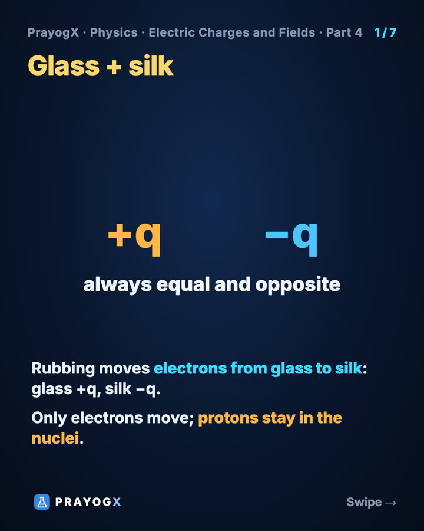
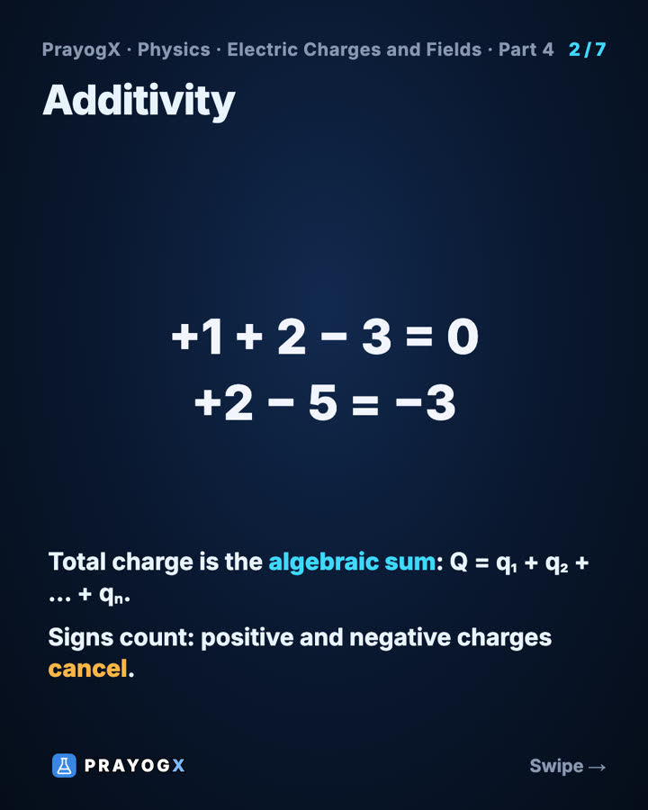
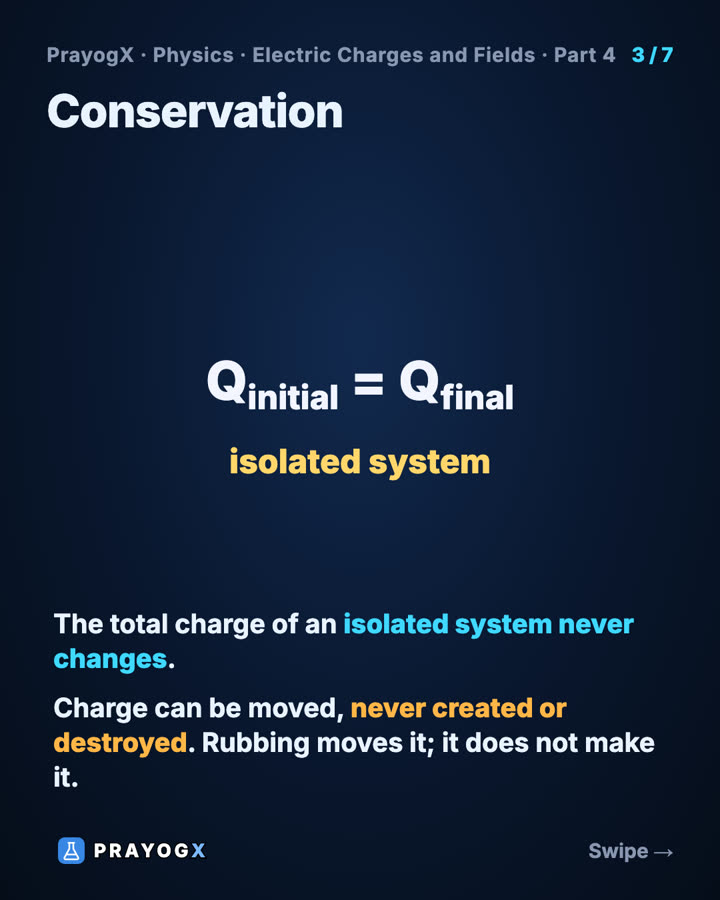
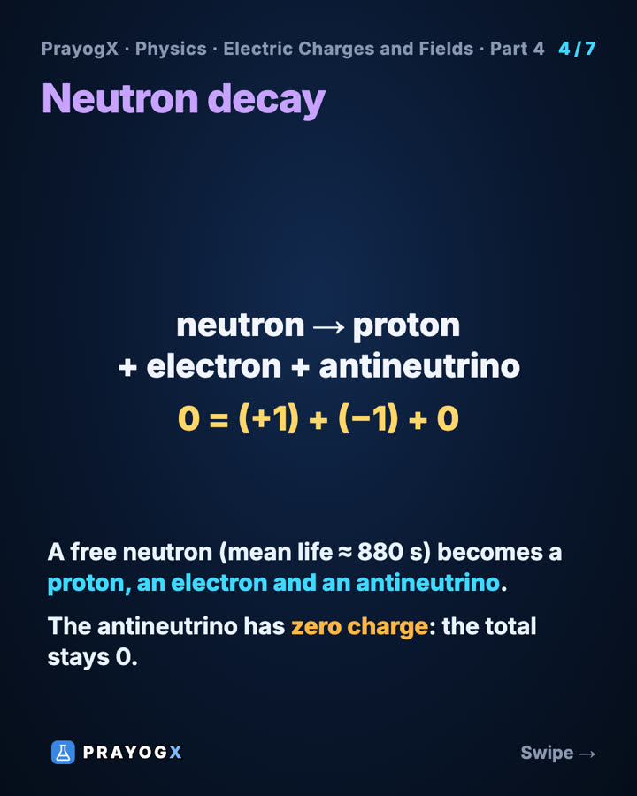
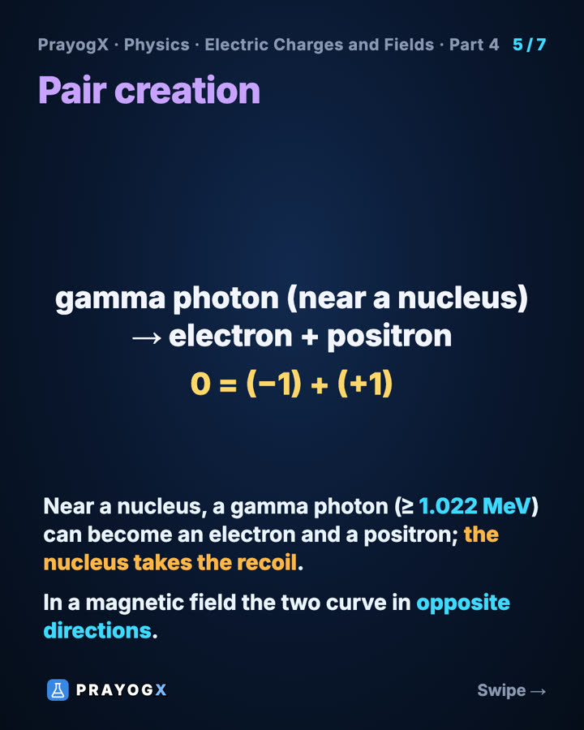
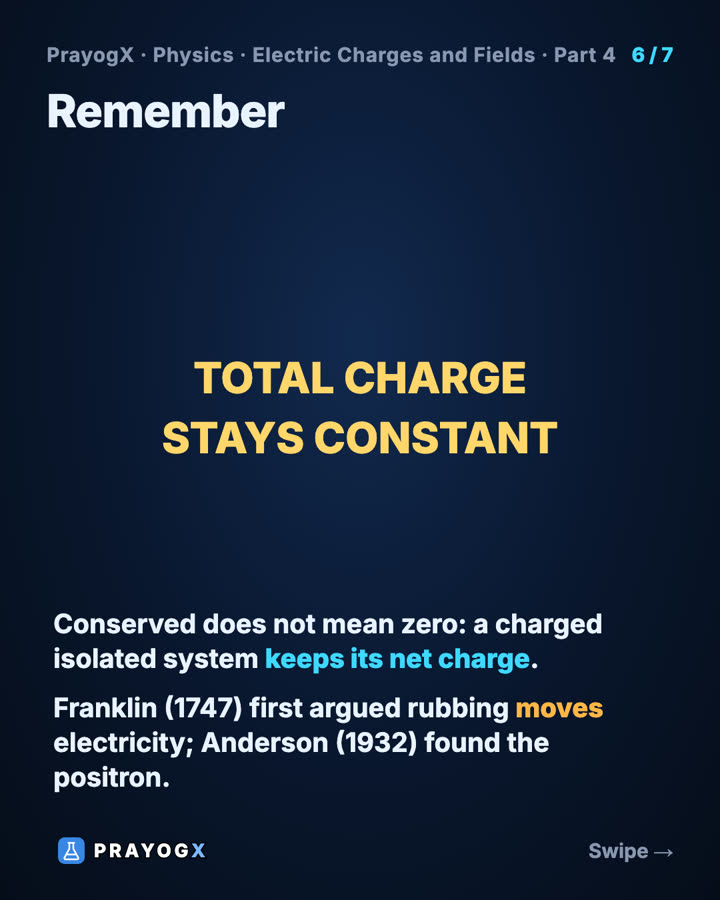
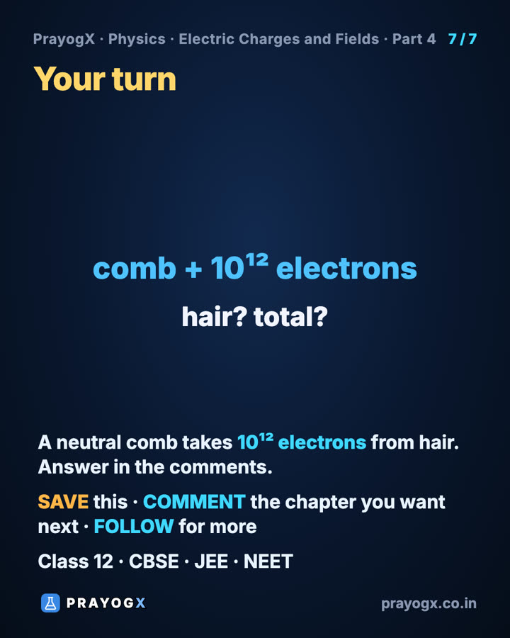
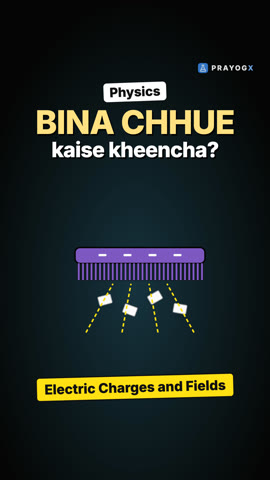

Where Does Electric Charge Go? Additivity and Conservation of Charge
Video not playing? YouTube
Rub a glass rod with silk and the two get charges that are always exactly equal and opposite. Rubbing moves electrons from the glass to the silk; it never makes charge. Charge is additive (the total is the algebraic sum, signs included) and conserved (the total charge of an isolated system never changes). The rule holds even when particles transform: a free neutron becomes a proton, an electron and an antineutrino, and a gamma photon near a nucleus becomes an electron and a positron, with the total charge unchanged every time.
Download the short notesPDF, 184 KB · solved examples, practice set and answer key Download the memory cards
PDF, 1.1 MB · 7 cards: the whole topic at a glance, for quick revision Download the workbook
PDF, 189 KB · fill in the blanks, true/false, assertion-reason, MCQ, numericals, short answer, match the columns; detailed solutions at the end That's all the videos in this chapter so far Back to Electric Charges and Fields
Key points
- Glass + silk: electrons move from glass to silk, so glass is +q and silk −q, always equal and opposite. Protons never move.
- Additivity: Q = q₁ + q₂ + … + qₙ, an algebraic sum with signs (+1 + 2 − 3 = 0; +2 − 5 = −3).
- Conservation: the total charge of an isolated system stays constant, Q_initial = Q_final. Charge is moved, never created or destroyed.
- Conserved ≠ zero: a charged isolated system keeps its net charge.
- Neutron decay: n → p + e⁻ + ν̄e; 0 = (+1) + (−1) + 0 (the antineutrino has no charge).
- Pair production: near a nucleus (which takes the recoil), a gamma photon of at least 1.022 MeV gives γ → e⁻ + e⁺; 0 = (−1) + (+1). The two curve oppositely in a magnetic field.
- Numbers: e = 1.602 × 10⁻¹⁹ C; 10¹² electrons carry 1.602 × 10⁻⁷ C.
The charge ledger
| Process | Before | After | Total |
|---|---|---|---|
| Glass rubbed with silk | glass 0, silk 0 | glass +q, silk −q | 0 → 0 |
| Neutron decay | n: 0 | p +1, e⁻ −1, ν̄e 0 | 0 → 0 |
| Pair production | γ: 0 | e⁻ −1, e⁺ +1 | 0 → 0 |
| Comb and hair (10¹² e⁻) | 0, 0 | comb −1.6 × 10⁻⁷ C, hair +1.6 × 10⁻⁷ C | 0 → 0 |
Memory cards
Swipe through the 7 cards to revise this topic in a minute.







PDF, 1.1 MB · 7 cards: the whole topic at a glance, for quick revision
Quick quiz
10 questions. Choose an answer for each, then submit to see your score and the explanations.
More from Electric Charges and Fields
 Why a Comb Stays Charged but a Spoon Doesn't: Conductors, Insulators and EarthingRub a plastic comb on dry hair and it lifts paper bits; rub a steel spoon and nothing happens. Rubbing moves electrons, and what happens next depends on the material. Conductors (metals, the human body, the earth) have free electrons, so charge spreads over them and leaks away through the hand and body into the earth. Insulators (plastic, glass, nylon, wood) hold their electrons bound, so charge stays where it was put. Earthing connects a body to the earth, a giant charge reservoir; at home the earth wire and fuse use it for safety, and fuel tankers are earthed to prevent static sparks.Physics
Why a Comb Stays Charged but a Spoon Doesn't: Conductors, Insulators and EarthingRub a plastic comb on dry hair and it lifts paper bits; rub a steel spoon and nothing happens. Rubbing moves electrons, and what happens next depends on the material. Conductors (metals, the human body, the earth) have free electrons, so charge spreads over them and leaks away through the hand and body into the earth. Insulators (plastic, glass, nylon, wood) hold their electrons bound, so charge stays where it was put. Earthing connects a body to the earth, a giant charge reservoir; at home the earth wire and fuse use it for safety, and fuel tankers are earthed to prevent static sparks.Physics Electric Charge: Like Charges Repel, Unlike AttractThose sparks when you pull off a sweater come from electric charge. How rubbing moves electrons, what positive and negative mean, and why like charges repel.Physics · simulation
Electric Charge: Like Charges Repel, Unlike AttractThose sparks when you pull off a sweater come from electric charge. How rubbing moves electrons, what positive and negative mean, and why like charges repel.Physics · simulation
Electric Charges and Fields: Chapter IntroductionA rubbed comb lifts paper bits without touching them. Rubbing moves electrons, a charged body attracts even neutral paper by induction, and every charge reaches out through its electric field.Physics